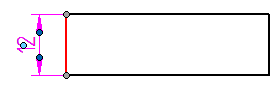
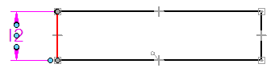
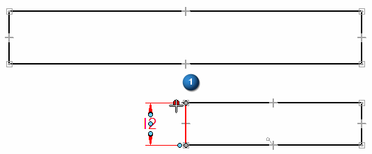
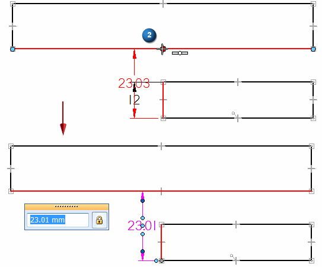
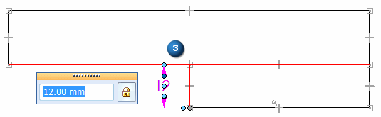

Change the parent of a dimension by dragging it
You can change the parent that a dimension is attached to by dragging a connection handle. You can do this to repair detached or partially detached elements.
-
Select a dimension to display its handles.
ISO dimension handles

ANSI dimension handles

-
Select a handle that connects the dimension to the dimensioned element (1).

-
Do one of the following:
-
To attach the dimension to a different parent and measure a different value, hold the Alt key as you drag the connection handle to the new element (2). When you locate a keypoint on the element, release the mouse button, and then release Alt.

-
To maintain a driving dimension value (and therefore modify a feature)—Hold Ctrl+Alt as you drag the connection handle to the new element (3). When you locate a keypoint on the element, release the mouse button, and then release Ctrl+Alt.

-
-
When you select a dimension or annotation, its parent geometry highlights.
-
Partially or fully detached dimensions are displayed in the dimension error color. The connected projection line is displayed in its default color.
-
When you reattach or replace a dimension, any prefixes, tolerances, and other formatting on the old dimension are applied to the new dimension.
-
To learn other techniques for manipulating PMI elements, see Move PMI elements.
How do I
Edit a 2D dimension (sketch, profile, draft)Move a dimension
Display a half dimension
Set terminator size and shape
Change dimension behavior
Change the orientation of a dimension
Break a dimension projection line
Remove breaks from a dimension projection line
Reattach a dimension or annotation using the Attach Dimension command
Add and remove jogs on a dimension
Activate a part for dimensioning in a draft quality view
Learn more
Dimension edit handlesSnap indicators for dimensions
Look up more details
Attach Dimension commandAdd Projection Line Break command
Remove Projection Line Break command
Activate Part command